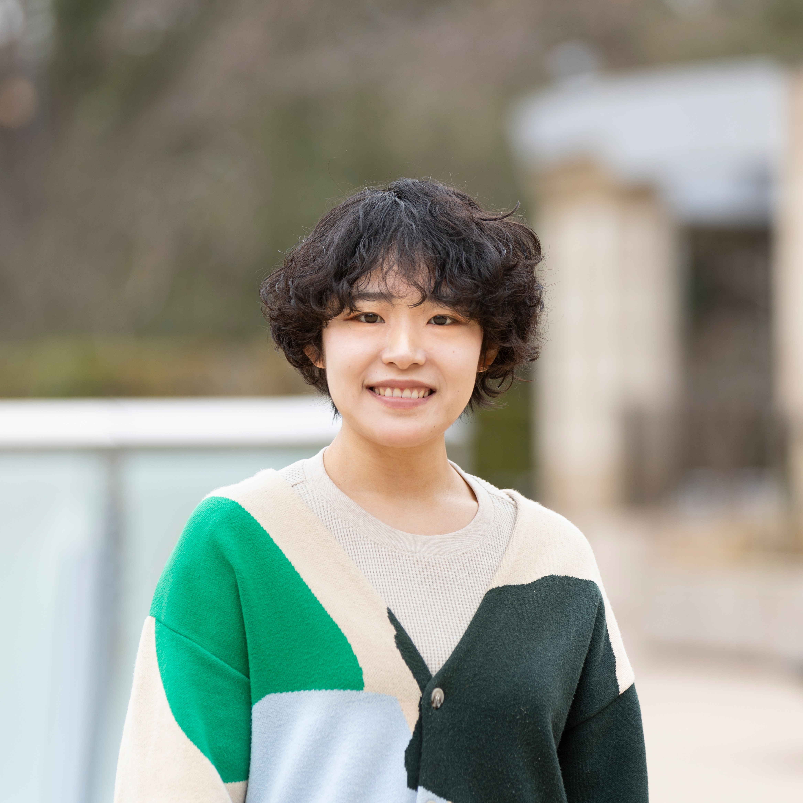

PROFILE

ERI NOMURA
野村 絵梨
sculptor/artist
|
東京都生まれ。2019年 東京藝術大学大学院美術研究科彫刻専攻 修了。 生活から生まれる痕跡やある種の汚れをデフォルメし、かわいくポップな彫刻を制作している。実生活では消されていく垢のようなものに焦点が当たるよう、制作している。 現在は、子供に美術を身近に感じてもらうために、制作活動と並行してねんど遊びワークショップを企画・開催している。 |
|---|
展覧会 |
|---|
| 2019 | グループ展「野村絵梨 + 髙橋瑞稀 『流動的身体の旅』」（GALLERY MoMo Projects，東京） |
|---|---|
| 2021 | 個展「ERI NOMURA : SILHOUETTE, SCHATTEN.」（キュレーション：THE FRIDGE TOKYO，エースホテル京都，京都） |
| 2021 | グループ展「OPEN STUDIO 2021」（ART FACTORY城南島，東京） |
| 2022 | グループ展「ファーレ立川アートミュージアム・デー2022 秋 企画展示『複号の彫刻家たち展』」（ファーレ立川街区，東京） |
| 2022 | 企画展「The Prize Show！～What’s 藝大？～」（藝大アートプラザ，東京） |
| 2022 | グループ展「top fermentation」（天王洲セントラルタワー，東京） |
| 2023 | 個展「垢も身のうち」（WADA GAROU TOKYO Lab＆AMMON TOKYO，東京） |
| 2024 | 企画展「第27回岡本太郎現代芸術賞展」（川崎市岡本太郎美術館，神奈川） |
| 2024 | グループ展「KODOMO CIBONE」（CIBONE，東京） |
| 2024 | 2人展「さよなら△またきて□」（WADA GAROU TOKYO Lab.，東京） |
受賞 |
|---|
| 2024 | 第27回岡本太郎現代芸術賞 入選 |
|---|
|
Born in Tokyo. Received an M.F.A. in Sculpture from Tokyo University of the Arts in 2019. I create cute and pop sculptures by deforming traces and certain types of dirt that emerge from everyday life. My work focuses on elements like gradually disappearing grime, which are often overlooked in real life. Currently, alongside my artistic production, I organize and host clay play workshops to make art more accessible to children. |
|---|
Exhibitions |
|---|
| 2024 | Group Exhibition "KODOMO CIBONE" (CIBONE, Tokyo, Japan)） |
|---|---|
| 2024 | Special Exhibition "The 27th Exhibition of the Taro Okamoto Award for Contemporary Art" (Taro Okamoto Museum of Art, Kanagawa, Japan) |
| 2023 | Solo Exhibition "Dirt is also part of the body" (WADA GAROU TOKYO Lab. & AMMON TOKYO, Tokyo, Japan) |
| 2022 | Group Exhibition "top fermentation" (Tennoz Central Tower, Tokyo, Japan) |
| 2022 | Special Exhibition "The Prize Show! ~What’s Geidai?~" (Geidai Art Plaza, Tokyo, Japan) |
| 2022 | Group Exhibition "Faret Tachikawa Art Museum Day 2022 Autumn, Special exhibition '±Multiple Sculptors Exhibition'" (Faret Tachikawa, Tokyo, Japan) |
| 2021 | Group Exhibition "OPEN STUDIO 2021" (ART FACTORY Jonanjima, Tokyo, Japan) |
| 2021 | Solo Exhibition "ERI NOMURA : SILHOUETTE, SCHATTEN." (Curated by THE FRIDGE TOKYO, Ace Hotel Kyoto, Kyoto, Japan) |
| 2019 | Group Exhibition "Eri Nomura + Mizuki Takahashi 'A journey of Flow Bodies'" (GALLERY MoMo Projects, Tokyo, Japan) |
Award |
|---|
| 2024 | The 27th Taro Okamoto Award for Contemporary Art: Selected |
|---|